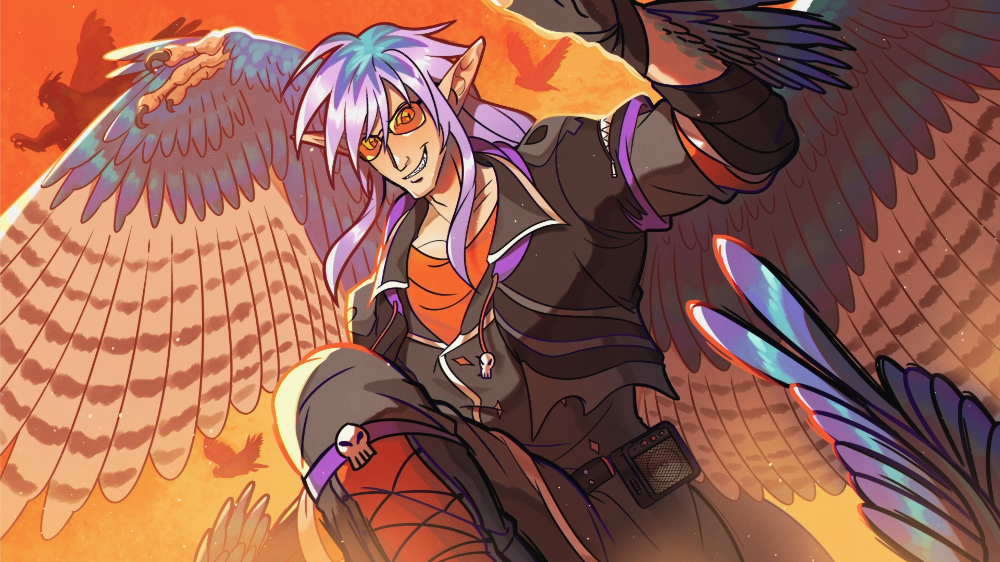
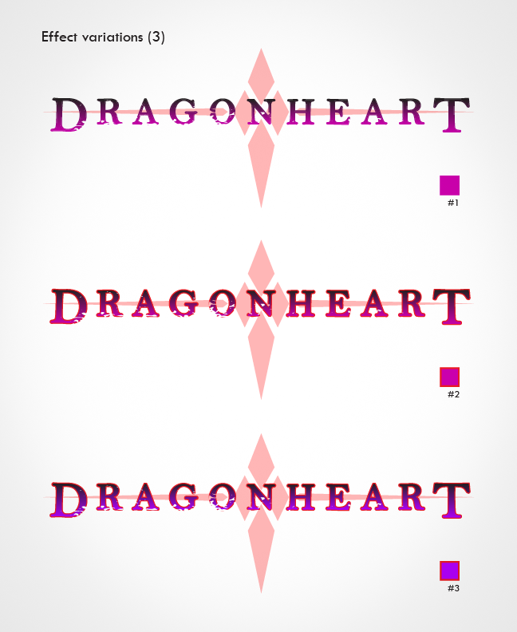

Commission Work
Below is a collection of custom illustrations I've completed throughout 2023-2025, following the guidelines of clients whom I've connected with via social media or email.
While the majority of commission requests I receive include character artwork, covering original characters and fan art, I have also worked with clients on wildlife illustration and designing individual elements such as logos, objects, weapons, and outfits.
Clip Studio Paint is my illustration tool of choice, whereas Adobe Illustrator is used for vector projects.


